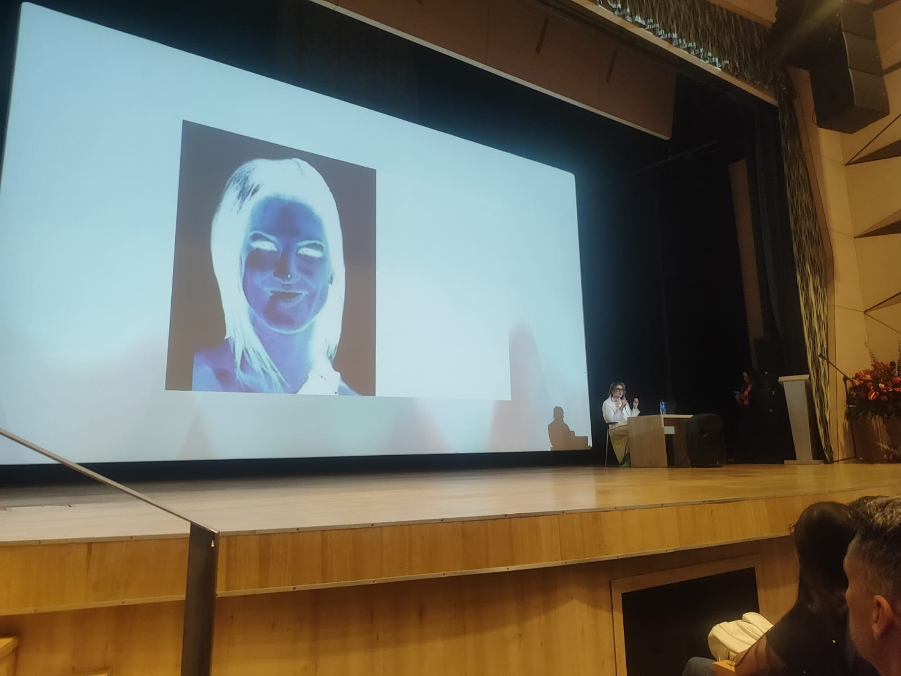
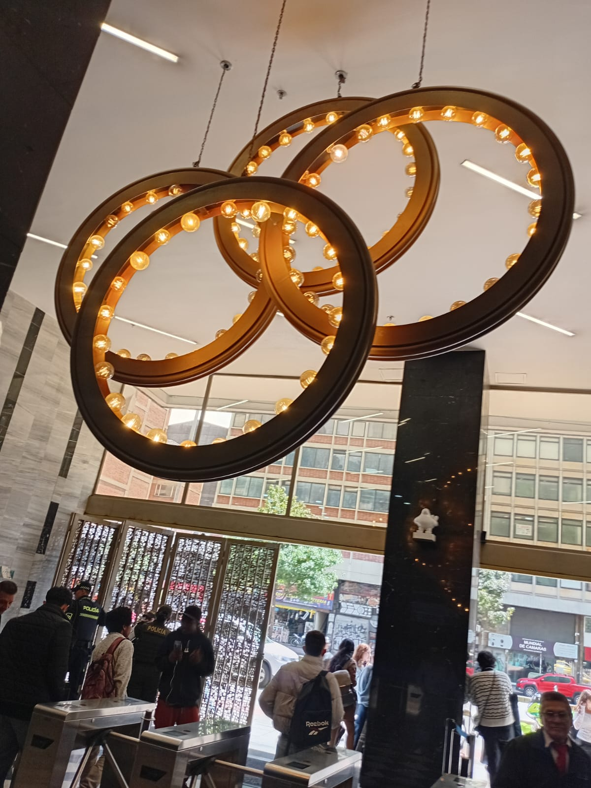
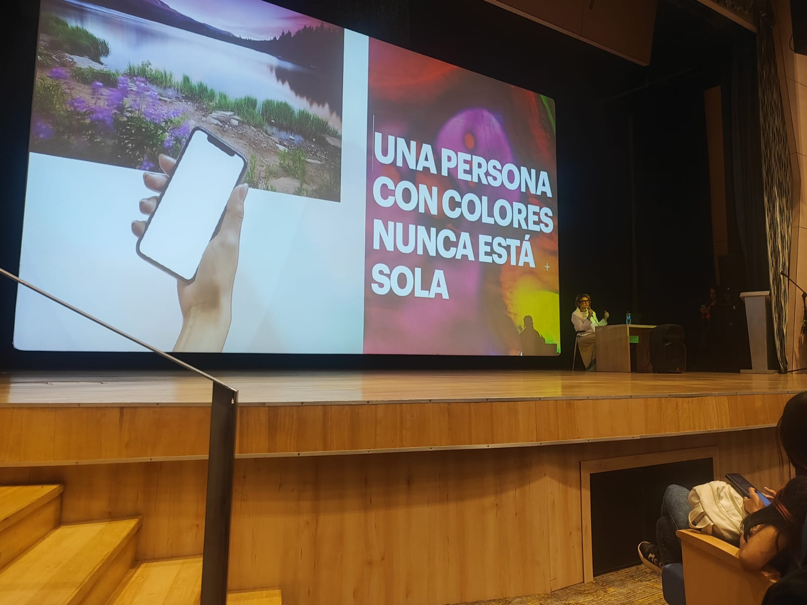
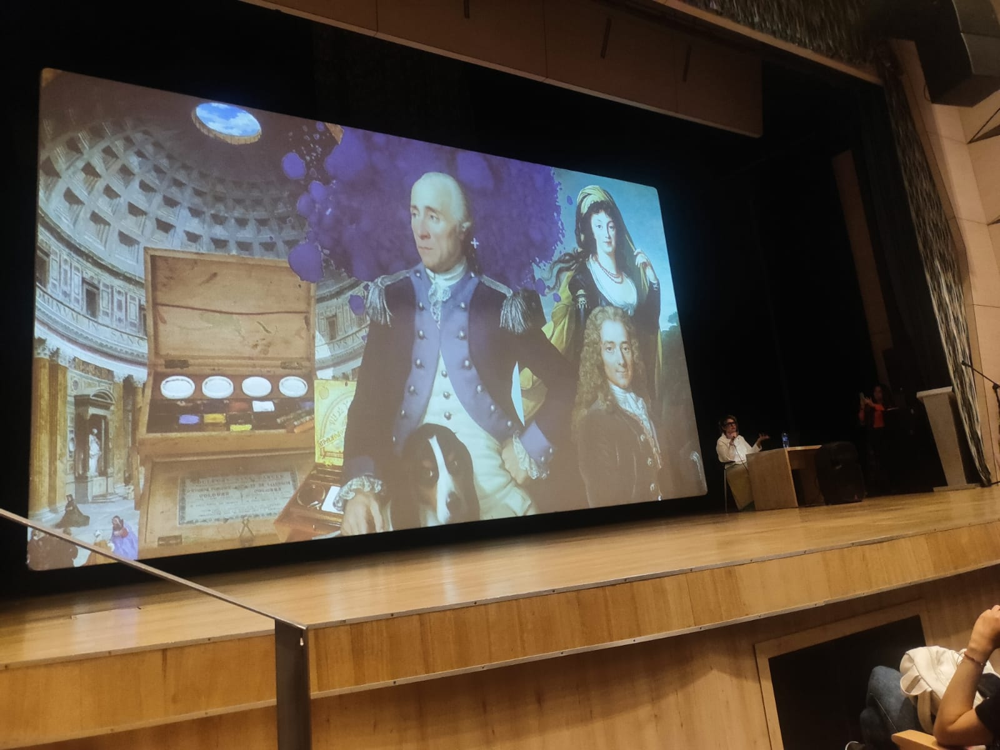
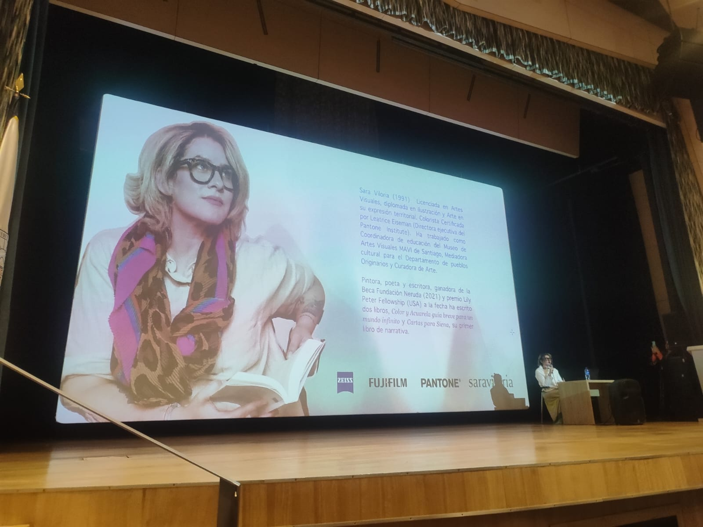
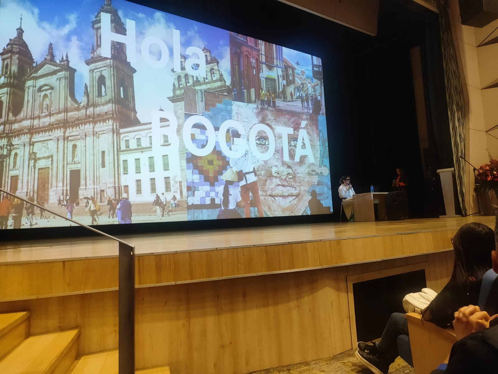

Inicio conceptual sobre identidad cromática.
Conceptual introduction to color identity.
La conferencia de Sara Viloria me permitió comprender cómo el color se convierte en una herramienta estratégica para narrar, persuadir y diseñar experiencias de alto impacto en moda y productos digitales.
Sara Viloria's keynote helped me understand how color becomes a strategic resource to tell stories, persuade audiences, and design high-impact experiences in fashion and digital products.
Inicio conceptual sobre identidad cromática.
Conceptual introduction to color identity.

Percepción visual y contraste como detonante emocional.
Visual perception and contrast as emotional triggers.

Armonía de iluminación y ambiente de bienvenida.
Lighting harmony and welcoming atmosphere.
Referentes artísticos para construir paletas con propósito.
Art references to create purposeful color palettes.
Estética del espacio y coherencia visual institucional.
Spatial aesthetics and institutional visual coherence.

El color como compañía narrativa en el diseño personal.
Color as a narrative companion in personal design.

Historia cultural del color y su evolución semiótica.
Cultural history of color and its semiotic evolution.

Trayectoria profesional como referente interdisciplinar.
Professional journey as an interdisciplinary benchmark.
Pantone como sistema para precisión y consistencia.
Pantone as a system for precision and consistency.

Contexto local: color, ciudad e identidad colectiva.
Local context: color, city, and collective identity.
Tanto en moda como en desarrollo web, el color guía decisiones: comunica tono de marca, jerarquiza información y activa comportamientos. En interfaces UX/UI, una paleta bien diseñada mejora la navegación, disminuye carga cognitiva y fortalece la identidad del producto digital.
In both fashion and web development, color drives decisions: it communicates brand tone, sets hierarchy, and triggers behavior. In UX/UI interfaces, a well-designed palette improves navigation, reduces cognitive load, and strengthens digital product identity.
Ver conceptos técnicos View technical concepts